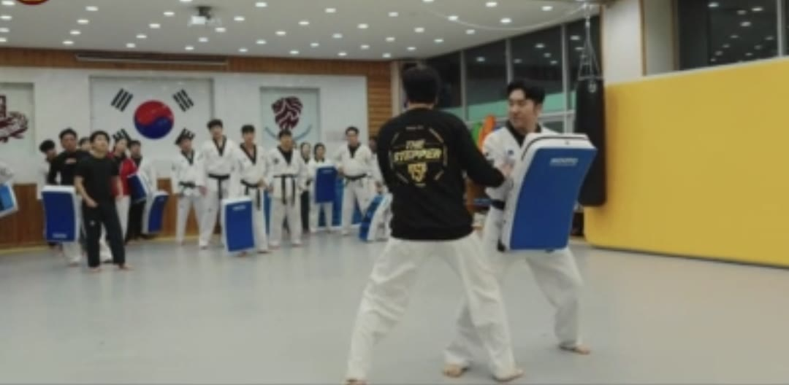
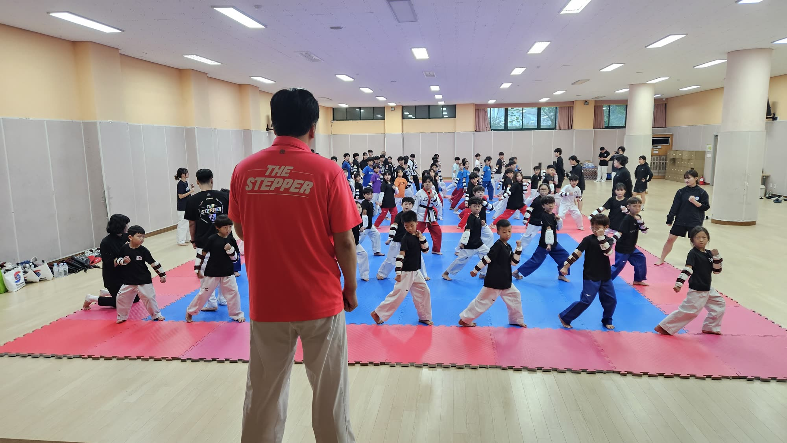

태권도 겨루기 전술 기록 · 2021년부터
사라지기 전에,
기록한다.
전자호구 도입 이후 현역에서 끊겨 온 인파이터 전술과 강한 기술을, 선수 출신 지도자가 몸으로 검증해 15단계 42장으로 정리했습니다.
누적 방문자···명
영상 기록
말보다 먼저, 영상으로
창단
2021
커리큘럼
15단계
기술 장
42장
전국 회원 도장
29곳
기록 01 — 왜 기록하는가
전자호구 이후 20년,
끊긴 기술들
전자 센서 호구가 도입된 뒤 약 20년 동안, 인파이터 전술과 강한 기술들이 현역 세대에서 이어지지 못했습니다. 더스텝퍼는 그 기술들이 사라지기 전에 체계적으로 기록하고 전파합니다.
- 01
몸으로 검증한 기술
선수 출신 지도자가 직접 검증한 실전 겨루기 기술을 문서로 남겼습니다.
- 02
발차기와 스텝을 함께
발차기 하나를 배우면 바로 스텝과 연결해 전술로 만듭니다.
- 03
전국 지도자 네트워크
29개 회원 도장과 함께 올바른 겨루기 교육을 전국에 보급합니다.
기록 02 — 커리큘럼 목록
15단계, 42장
제자리 기본 자세에서 스텝 겨루기까지. 단계를 누르면 해당 장의 세부 기술이 펼쳐집니다.
기록 03 — 기록을 지도로
기록한 기술을
AI가 다시 가르칩니다
AI 겨루기 코치는 42장 커리큘럼 원문을 기준으로 겨루기 기술과 전술 질문에 답합니다. 도장 밖에서도 같은 기준으로 복습할 수 있습니다.
학습 중
AI 코치는 현재까지 학습된 범위 안에서 답합니다. 지도자가 검증한 기술 데이터가 쌓일수록 다룰 수 있는 경우의 수와 전술, 답변의 정확도가 계속 높아집니다.
AI 코치 대화 화면 캡처 예정
기록 04 — 교육 원칙
기술이 하나씩 더해질 때마다 전술의 경우의 수는 제곱으로 늘어납니다. 발차기와 스텝을 함께 배워야 하는 이유입니다.
김민성 · THE STEPPER 대표, 헤드코치

회원 도장 지도 준비 중
기록 07 — 현장의 말
회원 도장 관장님들
15단계 커리큘럼이 정말 체계적입니다. 아이들이 단계별로 성장하는 게 눈에 보여요. 더스텝퍼 가입 후 도장 수강생이 눈에 띄게 늘었습니다.
이정안 관장 · 범태권도장 · 대구 세미나 내용이 현장에서 바로 쓸 수 있는 실전 전술 위주라 너무 좋습니다. 지도자로서 많이 배우고 있어요.
서정민 관장 · 아이비태권도장 · 대구 더스텝퍼와 함께하면서 겨루기 교육의 방향이 완전히 바뀌었습니다. 체계적인 커리큘럼 덕분에 지도가 훨씬 쉬워졌어요.
조금호 관장 · 진해감사랑리더십태권도장 · 창원 전국 세미나를 통해 다른 지역 관장님들과 네트워크가 생겨서 너무 좋습니다. 정보 공유도 활발하고요.
임경민 관장 · 율하태권도장 · 김해 김민성 대표님의 겨루기 철학이 담긴 커리큘럼입니다. 단순 기술이 아닌 전술적 사고를 키워주는 교육이에요.
박우정 관장 · 다원태권도 · 창원 처음엔 반신반의했는데 세미나 두 번 참가하고 완전히 팬이 됐습니다. 지도자로서 성장하는 느낌이 확실해요.
선창우 관장 · 해솔태권도장 · 울산